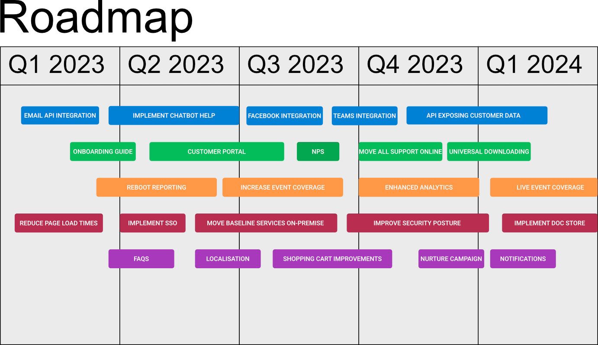

PandA - a framework for product stategy and building a coherent product
roadmap
How do you line up your quarterly goals, enable experimental thinking
and ensure you're aligned with the product strategy?
×
The PandA Framework
How do you decide where to invest in the short-term while acknowledging
the uncertainty of the future and the possible pivots you'll have to
make? And do we really need yet another framework to solve
these problems?
The Messy Middle
Let's start at the end. Why do we need another framework at all? The
Agile Manifesto
has been around for over 20 years. The
Mythical Man-Month was published almost 50 years ago.
Surely at this point, we've figured this stuff out?
Spending time on almost any organised software development effort
quickly proves otherwise. Most teams I have observed suffer from one or
more of the following:
too many simultaneous demands
insufficient value placed on discovery (product or technical)
inadequate prioritisation
not enough planned work, leading to reactive development rather than
proactive problem solving
feedback from customers never reaches the development team
no link between the work they are doing and the team or organisation's
strategic goals
feature delivery is incentivised at the cost of innovation
My contention is that the frameworks in use are either too focused on
tactics or on a high-level strategy, and too often the link between the
two is forgotten.
As a product and engineering leader, I spend a lot of time talking about
priorities and trade-offs with other leaders. Most agree that they want
autonomous teams empowered to deliver software. Few businesses seem
equipped to actually make it happen. The frameworks available are too
abstract and the business demands too immediate. As a result, Product
Managers either
create waterfall-style product roadmaps, giving the illusion of
certainty, or
get so caught up in the immediate demands being placed on them that
everything becomes urgent.
All too often they end up doing both.
The Illusion of Certainty

Typical feature-driven roadmap
×
Where teams have a
North Star, there's often not enough structure in place to ensure that the
work that they are doing is aligned with achieving
that goal. A lot of teams either don't have such a metric, or it's
poorly defined. Many teams, whether they have one or not, couldn't
tell you how the work they are doing is moving the organisation
towards achieving it.
Organisations consistently struggle with the trade-offs between
commitments that teams are expected to make, and the fact that we
don't have a perfect view of what will happen. I often see
monolithic roadmaps that pretend absolute certainty about the
future. Worse, they frequently list features to be delivered rather
than problems to be solved and have no way of measuring success.
The unintended consequences are that teams don't learn from the outcome
of their work, or know when external circumstances have drifted from
their assumptions. They just continue to execute against the roadmap,
regardless of the value delivered, or what the organisation has learned.
Even when the organisation pivots due to missing its numbers or a change
in strategy, teams often don't adapt. They just keep executing against a
plan that's no longer fit for purpose.
The Cone of Uncertainty
This is where the PandA framework comes in. Learning from what we
deliver and aligning the team's work with the strategy as we move
through the
cone of uncertainty
are core to the success of product teams. The PandA framework is built
around this idea.
The Cone of Uncertainty
As Objectives and Key Results (OKRs) have become almost universally
adopted, I haven't seen enough consideration of the different ways teams
might achieve those objectives while learning and recalibrating along the
way. A lot of the time, they just put the same monolithic roadmap in a
different format. Lip service is paid to learning, but the guiding
principle of how to most cheaply learn the next most important thing is
frequently absent. It's often not even clear that teams could identify the
next most important thing.
I wanted a roadmap model that would allow me to:
understand the possible ways the team could achieve its
mission
research potentialhypotheses and solutions, learning
what wouldn't work as cheaply as possible
prioritise learning based on the testing of these
potential hypotheses as well as the evolving needs of the business.
enable teams to promise delivery against those
priorities with a reasonable amount of certainty
get teams close to the customer so that they can
appraise the impact of the work they have done and
re-calibrate accordingly
consistently check for alignment with the
organisation's evolving needs and priorities.
So, why another framework? I simply couldn't find one that did all of
these things.
PandA Framework - forward-looking steps
×
The PandA Framework
The PandA Framework aligns product roadmap and strategy with
immediate goals by dividing the short-term future into a series of
stages where work can be promised and
prioritised. Teams will have different-sized stages
based on the amount of uncertainty they are able to manage. I've
worked with Kanban teams where they are happy to pivot almost
immediately based on shifting priorities. I've also been in
organisations where quarterly OKRs frame the team's commitments, and
these are considered locked-in.
Looking to the medium-term, the team forms hypotheses about
potential areas to invest effort. For the more distant
future, the team maintains a list of possible customer
value they could deliver. The further along the cone of uncertainty we
look, the more we should be thinking about what we might do, rather than
what we are doing or will do. Teams need to be free to think about
potential outcomes and test hypotheses based on different situations the
organisation may face.
For software that has been released, the team
appraises its impact, and measures it against their
original hypotheses. At each stage, the team ensures that it is
aligned with the organisation's broader strategy as it
evolves in response to events.
Steps in the PandA Framework
Promised
What is it?
In the current period (sprint/quarter/slice), the team should have
agreed what they are expected to deliver, i.e. promised work for
release. They may have used t-shirt sizing or some other method to
estimate effort. The team can distill user stories into value that
they will create, breaking them down into tasks. Product marketing can
start to inform customers with confidence of upcoming releases. At
this stage, the work is well-defined, and there is a high level of
confidence about the solution being delivered. Everyone is aligned and
working toward a well-defined user outcome.
How does it work?
This is the paradigm most agile software development teams are working
to. Tasks are defined and allocated to the team and executed on within
the favoured working method of the team (usually Scrum or Kanban or a
mix of the two). The team meets daily to track progress. Work is
visualised and moved across a board as it proceeds from
Ready for Development to Done.
Prioritised
What is it?
Looking forward to the next period/slice, Product Management should be
clarifying the priorities for delivery. User stories are created,
designs begin to take their final shape through workshops involving
the whole product team. As promises are delivered, the next priorities
are pulled into the team's orbit and delivery can begin.
For all prioritised work, any Preconditions that need to be delivered
should be noted. The delivery of this Precondition must be aligned
with the promise of the team to deliver the required functionality.
For example, if the team is expected to deliver a new data-driven
feature that requires a new service from a platform team, both teams
need to agree when the work will be prioritised and what can be
promised.
How does it work?
Many teams use workaheads to plan upcoming development effort based on
the priorities identified by Product. Others pride themselves on their
ability to pivot and define work as late as possible. There's nothing
wrong with either of these approaches, and the framework supports
both. The important thing is that work is being prioritised at the
pace the tean works at, so that they can proceed with confidence. The
work that is to be prioritised is pulled from the work done at the
Potential stage, where hypotheses are tested and
assumptions de-risked.
Potential
What is it?
This is where the PandA framework really starts to add value. Looking
beyond the workahead period, the team interrogates what the next best
actions it can take might be. As the cone of uncertainty
widens, the framework enables teams to take account of where the
business is as well as consider feedback from current outcomes and
research. This enables teams to move forward with certainty and
flexibility.
Rather than rigidly planning and ignoring the environment, teams take
the opportunity to formally test hypotheses for problems they can
solve. Team leads meet regularly to discuss hypotheses, understand how
best to test them and review product and market research. Customer
interviews and experiments can guide teams in de-risking their
assumptions. Reviewing where the business is and the outcomes achieved
by released software informs identification of next best actions.
How does it work?
Since we can't be definitive about what we should work on past a
certain time horizon, we hold regular strategy meetings where we
discuss:
what our metrics are telling us about the software we have released
(see the Appraised step)
feedback from customer, market and product research
hypotheses about how we can move the needle for the product
experiments and further research we can use to test these hypotheses
results from these experiments and how they inform priorities or the
need for further tests
the team's focus and how it aligns with the wider product and
corporate strategy
any pivots the team should make due to organisational factors
The entire product team should participate in these discussions. This
will give the engineers the opportunity to raise any feasibility
concerns as well as contributing valuable ideas. It also ensures early
shared understanding about potential lead times to build capabilities
within the application.
As there are many things the team can potentially do, there should be
quite a few hypotheses generated and tested. Hypotheses and test
results should be recorded somewhere the team can easily review and
learn from them. Prioritisation should be driven by:
what has the best fit with organisational stragegy and current
positioning?
understanding our riskiest assumptions
what experiments we can undertake to de-risk our hypotheses
user research on our hypotheses to seek alignment with customer
problems
the size of the bets we would like to make versus the potential
payoff
Teams may use frameworks such as RICE or MoSCoW to help define their
priorities. Experiments should be prioritised alongside product work.
Possible
What is it?
Looking into the far future, say more than 9 - 12 months away, things
become even less certain. This far out, we should be asking very
general questions about where we might take our application. 'How
might we...' is a great framing tool for thinking of all the ways that
the product could serve customers in new and interesting ways.
As we think about the possibilities for our product, the strongest of
those, or those most aligned with our goals can form the basis of
hypotheses and be pulled into the 'Potential' zone for further
investigation. Not all possibilities will become potential ideas for
the application, just like not all the potential ideas will
necessarily be prioritised.
How does it work?
As we're looking into the distant future here, we shouldn't feel
constrained in how we consider the possibilities for the product. Any
feedback from customer research or ideas based on where the
organisation might be going should be recorded as possibilities.
Customers and stakeholders often come with ideas for the product which
lend themselves to this kind of open thinking. Teams should meet
regularly to brainstorm ideas for the product. Any ideas that are not
instantly dismissed, wherever they oome from, should be saved and
reviewed. The strongest possibilities should form the basis of the
hypotheses that are created and tested in the Potential stage.
Appraised
What is it?
Once an increment of software has been released (the team has
delivered on its promises), the team needs to appraise whether it has
had the desired impact. Too often teams value output over outcomes,
releasing software, but never verifying if it delivered value to the
customer.
How does it work?
Because the framework is driven by hypotheses, the team knows what it
expected its released software to achieve. They observe the results of
customer interaction with the software, by gathering usage data or
through user interviews. They then have the data to measure whether
they achieved the objectives they set out when creating their
hypotheses.
Whatever is learned from this data is then applied to devising further
potential work and possibilities for the product. Thus, we can see the
framework operates as a cycle based on information and work flow.
The Appraised step
×
PandA visualised as a cycle
×
Alignment
What is it?
Bearing in mind the cone of uncertainty, and everything we don't know
the further into the future we look, it's important to ensure that
teams constantly check the alignment of their potential outcomes with
their product and business strategy.
How does it work?
In the short-term (promises and priorities) should be aligned with
Objectives and Key Results (OKRs), Key Performance Indicators (KPIs)
or the planning framework in use by the organisation. Possibilities
and potential work should be checked for alignment with the business
strategy as teams work on them and bring them to full definition. This
ensures that the team have early warning signals if they need to
course-correct.
Framework as seen with the cone of uncertainty
So do we need another framework?
The PandA framework offers a solution to some of the problems product
team face when asked to balance the short-term objectives of the
organisation with longer-term goals and the uncertainties inherent in
software development. The goal of the framework is to ensure alignment
of outcomes with strategy. It's a lightweight framework, bridging the
tactical and strategic gaps that often exist between execution and
business strategy. I think it has the potential to ease some of the pain
software development teams currently experience.
Using the framework will enable teams to
focus on immediate work
think in outcomes
measure their impact against those planned outcomes
define their upcoming work pragmatically
ensure their work is aligned with the business strategy.
The framework enables teams to create and own a roadmap that gives a
sense of direction without being overly prescriptive, while inviting
team experimentation and discovery.
Now what?
This is a starting point. I will evolve the framework and will be creating
a worked example. If you like it, go use it. Let me know how it goes.